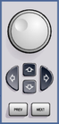

Rotary Knob and Navigation Keys
The rotary knob, the ARROW keys and the PREV and NEXT keys are alternative control elements for data variation and navigation in the graphical user interface.
 |
- Rotary knob:
– Increases or decreases numeric values in editing mode – Moves the cursor – Scrolls within lists, tables or tree views – Confirms entries (press the rotary knob, equivalent to ENTER) - Arrow keys:
– ⇦ / ⇨ – move the cursor in input fields and scroll within lists, dialogs or tables – ⇧ / ⇩ – vary numeric values and scroll within lists, dialogs or tables - PREV and NEXT – in a dialog with several tabs, switch between the tabs